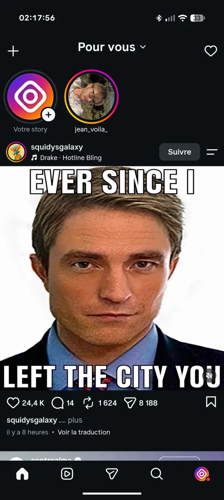
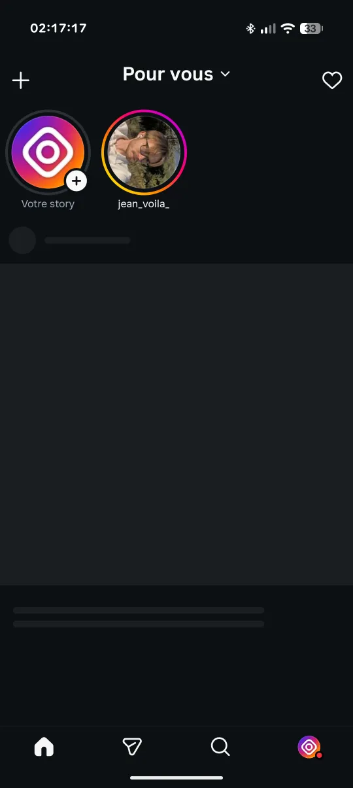

Instagram without the feed: keep only DMs and stories
Why people want Instagram without the feed
For many people Instagram is a messaging app with a feed attached: friends reply to stories, groups chat in DMs, events get organised there. The feed, with its suggested posts and mixed-in Reels, is what turns a two-minute reply into forty minutes of scrolling. Removing it keeps what you actually open the app for.
Two ways to set it up in Oxbow
1. Block the home feed entirely
This is the default. The feed request is blocked at the network level, so no posts load and there is nothing to scroll. Stories stay at the top, and the bottom bar takes you to messages, search and your profile. Combined with the Reels and Explore blocks, the app becomes Instagram without the feed and without Reels.
2. Keep a Following-only feed
If you still want to see what friends post, leave the home feed unblocked and turn on Following feed only. The feed then shows only accounts you follow, in chronological order, without recommended posts. Unlike Instagram's own Following view, it doesn't reset when the app restarts.
Set it up in 4 steps
- Download the latest Oxbow APK (or the Clone APK to keep official Instagram too).
- Install it and log in to Instagram as usual.
- Long-press the Home tab to open Oxbow's settings.
- Keep Home Feed blocked, or unblock it and switch on Following feed only. Choose Direct messages as the landing page if you want the app to open straight on your inbox, then tap Done.
downloads on GitHub


What else you can hide
- Reels: tab and feed. Reels friends send in DMs still open.
- Explore and suggested accounts.
- Stories, if you want messages only.
- Notes above the inbox and the Instants button.
- Ads in the feed, stories and profiles.
- Any bottom-bar icon except Home, so a hidden section can't be reached by swiping either.